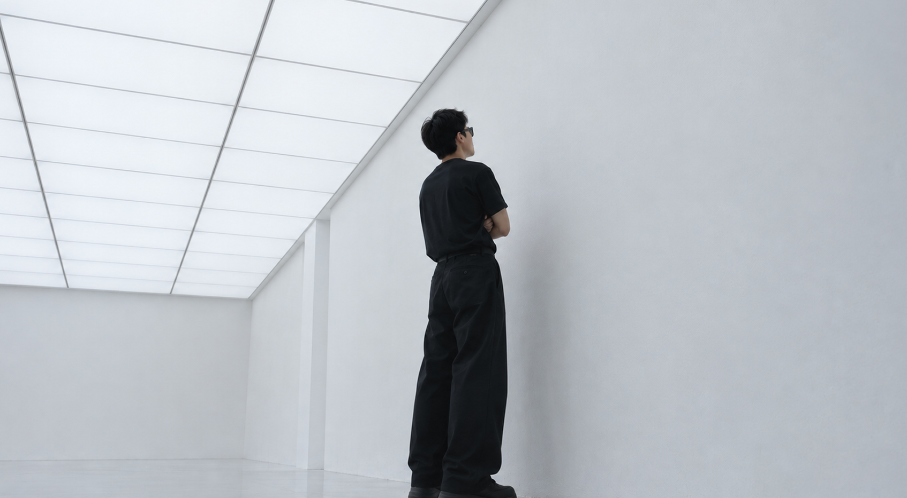
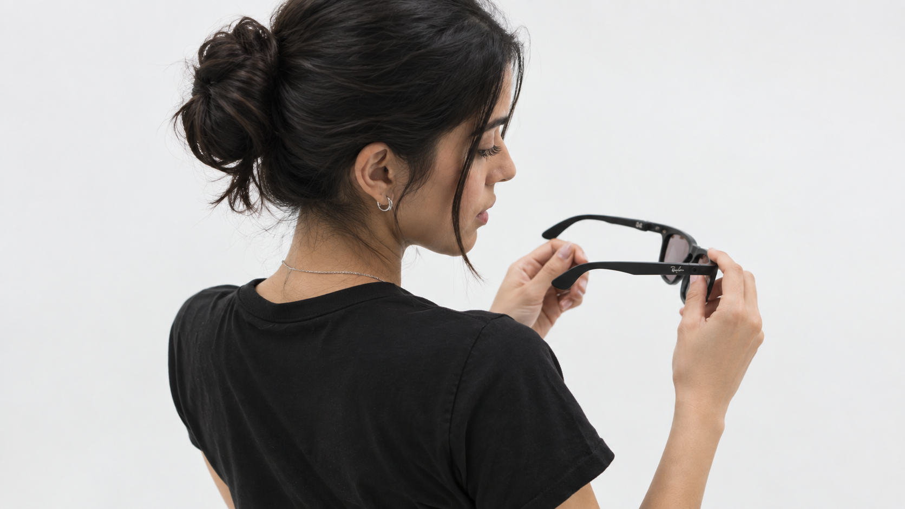
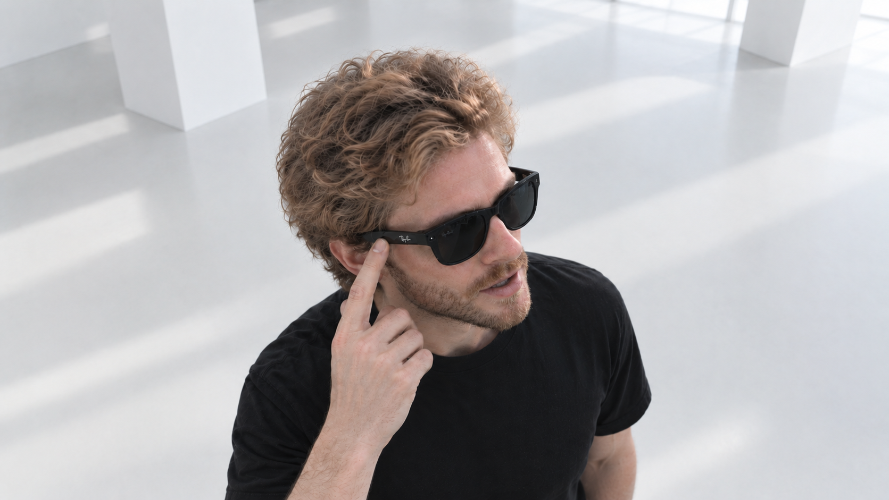
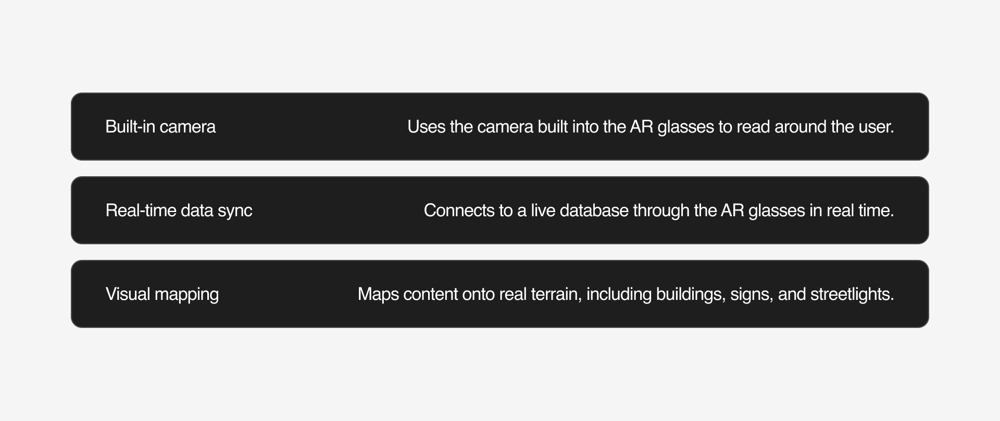
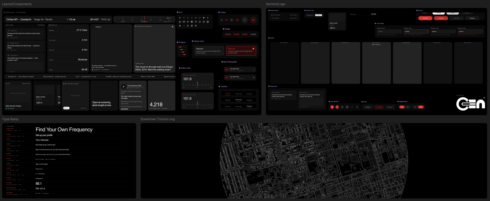
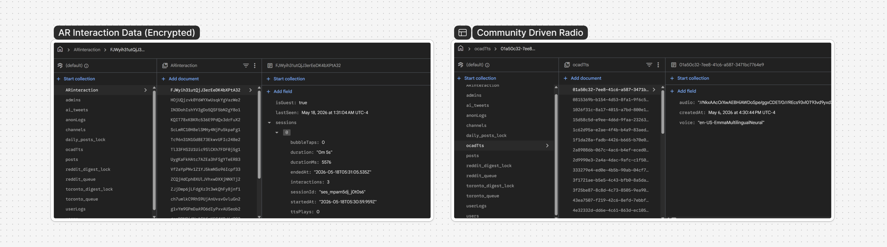
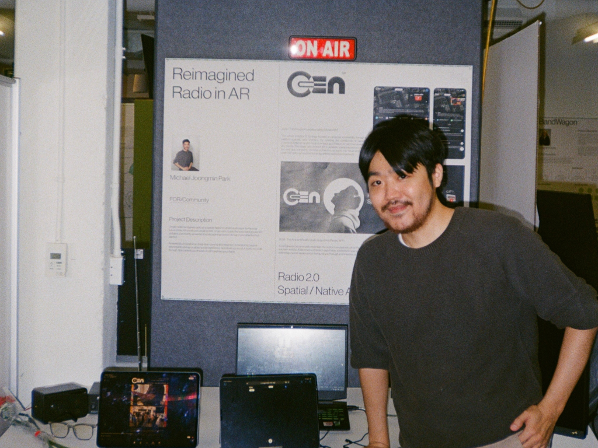

OnGen is a real-time geolocational platform for AR users.
In the AR era, AI already reads our surroundings and summarizes them for us, acting as an assistant that interprets the world on our behalf. But what if the AR experience could go beyond that assistant role? What if space itself were mapped into the user's own world, and reshaped to match each person's interests? OnGen began as a thesis project exploring that question.
At GradEX 111, the graduate exhibition hosted by OCAD University, OnGen drew 408 sessions from 147 test users (121 guests and 26 registered), with a median interaction time of 35.6 seconds. These real numbers let me validate whether the service could hold up in real-world use.
Snapshot
OnGen AR is a geolocation intelligence that reconstructs the city you might miss, or the one you care about, and brings it closer.
Problem Definition
AR devices already exist, but AR interaction is still an extension of the smartphone. So what new modes of interaction could maximize immersion in a user's augmented reality environment?
OnGen AR maps social media and local information onto real buildings, raising immersion and making space itself both content and context. Through the AR display, the project focuses on the user as a spectator and uses that role as an effective mode of interaction.
Potential Clients
The OS providers OnGen AR could realistically run on.
Meta, Rokid, and Apple's upcoming glasses are potential service providers, and a basic precondition for scaling OnGen AR. The field is still experimental, and since most experiences today rely on mobile and laptop interaction models, I found that AR itself is not yet effective. This pointed to the need for interaction built on the growing adoption of AR devices.
Discovery

How might we integrate users' physical and digital experiences in AR?

How might we enhance user attention in AR by delivering personalized services based on their interests?

How might we enable AI to understand users' physical context naturally, rather than relying on mandatory user input in AR?
The AR display market is growing quickly, and it points to strong potential demand, yet today's AR glasses still sit as an accessory to the phone. To move past that limit, I set the project's research direction toward maximizing the user's AR experience.
I mapped the user journey and the possibilities a user might experience, and built a strategy to optimize that experience. Five peers and two supervising faculty, Alexander Manu and Bernard Dietz, critiqued the work, and I used their feedback to design the actual survey, shaping it in line with TCPS 2. Together with existing research, Survey Phase 1 gave a baseline read on user behavior and set up Phase 2.
Building on the points confirmed in the earlier stage, I ran the hypothesis validation through a Google Form survey with 22 respondents. To ground their answers, I published an MVP prototype that supported basic interaction and provided it as context.
Low-fidelity Conceptual MVP
I ran a digital showcase of what OnGen AR does, so people could respond to something concrete instead of a description. Each person went through the interaction first and answered the survey afterward. Thirteen of the 22 respondents interacted with the working app directly.
Recognition AssistanceCollects the user's digital records and behavior data to sustain and prompt their actions.Live site dashboardUses the user's location to surface nearby updates, news, and related current information.Personalized podcast curationDraws on what the user experiences as media to automatically deliver digital content and news matched to their interests.
Survey Result - Phase 1
I built statistics and a dashboard to gauge how ready real users are for AR experiences and how they feel about AI being part of them. As part of the qualitative research, I collected a range of user prompts that surfaced concrete excitement and concerns.
Confirmed Concept Direction
After the pre-pilot and the survey, I confirmed the direction. OnGen curates nearby local information and each user's interests, and for the interaction itself it uses the camera to map that content onto the real terrain, so the space around the user becomes the experience.

These three fixed the design synthesis and the interaction scope, and I planned the build against them.
Prototyping
The prototype was built from computer-science components. Because the service runs on AI, I set up an environment that connects to AI APIs and runs a local AI, and carried out the experiments there.
Built entirely in VS Code, the prototype runs as a small full-stack app.
PythonServer for the local AI and the backend.
HTML & CSSFlattened frontend that renders the interface.
JavaScript appBackend logic that runs the experience.
PrompterPodcast Generator AI instructions that generate each broadcast.
Figma Design System

I built the OnGen interface as a design system in Figma, a web-based resource that gathers the dashboard, components, type ramp, and the downtown map in one place. It cannot run inside an actual AR device, but it let me design the whole interface as a single coherent concept and use it as the visual reference for the build. Along the way, I took critique at Gate 5 and Gate 6, which let me refine the finer interaction details.
Gate 5 Mid-point Showcase
Before I published to Firebase, I showed this build as a mid-point check at Gate 5, around February, during the faculty and peer critique. The showcase made clear that the interaction still fell short of the AR premise in many places, and I used that feedback to reset the project's direction.
Firebase Data Pipeline

Through Firebase, I captured user interaction data in detail, from micro-interactions to retention and how users responded, and set the project up to update itself recursively from that data. I designed it to parse and extract the data as well, so the interactions could be analyzed directly.
Tracking Process
blender/libmv
This breaks the overlay into its steps. I start from the raw scene, scan the site into a rough 3D model, build the digital layer against that model, and composite it back into the viewpoint, so the content lines up with the real buildings.
Spatial Feed
The feed lives in space rather than in a list. Each post is pinned to where it happened, carrying its bearing, distance, and how many people are listening nearby, so the city itself becomes the timeline.
Conclusion
GradEX 111 Showcase

OnGen AR on show at GradEX 111, OCAD University.
This board brings together the internal research methods and results I used to build the project. I designed the final academic research for realizing Audio Augmented Reality, and secured the data that follow-up research will need. Establishing a new user flow for AR interaction let me confirm this as a market from a new product-design perspective.
Spatial Intelligence
Building spatial intelligence was the core of the OnGen project. It is a product meant to widen the practical use of AR hardware, and a project that connects the digital and the physical. As AR glasses are expected to gain more capability, it holds real room to grow.
Limitations
SDK access to AR display hardware during the project period.
At the time of this project, Meta had not opened the Ray-Ban Display SDK to developers, so I could not build OnGen onto the device it was designed for. This was the main constraint on the project and the one dependency I could not design around. I therefore ran the showcase on a web app I built myself with HTML and Python, which means what visitors experienced may not have matched the intended AR interaction exactly. Once the SDK is released to developers, OnGen can run on the actual hardware and the project moves into full development.